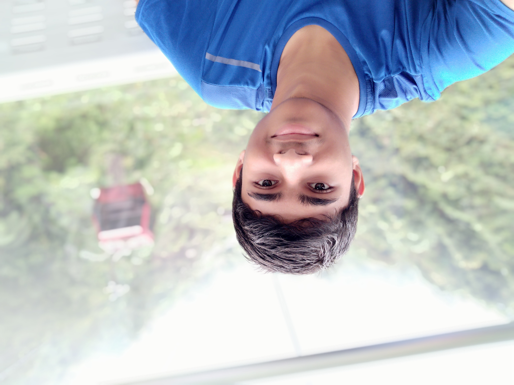

My Portfolio
Polytechnic EAE ePortfolio
hi
Hello I'm MOHAMED FAHIM S/O MOHAMED NAINA
Mohamed Fahim was a student of St. Patrick’s School
from 2017 – 2020.

About myself
I'm Sec 4 student currently studying in St. Patrick's School. I take an 8-subject combination which comprises of Pure Physics, Chemistry and Computing. I was always fascinated by new technologies. The fact that our smartphones have the ability to receive an input and process things motivated me to dive deeper and discover the digital world. Technology will shape our futures and I would like to be a part of it!
How I developed my passion in IT
I have had a keen interest in computers since young. My Uncle, who is working as an IT Professional, has introduced me to the world of computers. Everytime I meet him, he would deliver updates on the latest IoT devices and programmes. He was on of the key reasons for my special aptitude in Informtion Technology.
My Interests
-
I like to do volunteer services. I have volunteered a few times for food distribution in communities organised by IMSSA. I also went on a 6D5N service immersion trip to Thailand.
-
I am very much into sports activites. My favourite sport is Cricket. I've represented my team in the National School Games. I'm also the Vice-Captain of the St. Patrick's Cricket Club. I'm also fond of Football and Swimming.
Achievements
- IT related
- Advanced Elective Module on Infocomm Securtiy Management @ Singapore Polytechnic
- DSTA-DSO IoT + Cybersecurtiy Camp 2019 Victoria School
- DRCT International
- Cricket
- Council of Patrician Ambassadors